사용자 가이드북
접속 · 바로가기 추가 · 로그인 · 일정 신청 · 승인 · 스케줄 확인
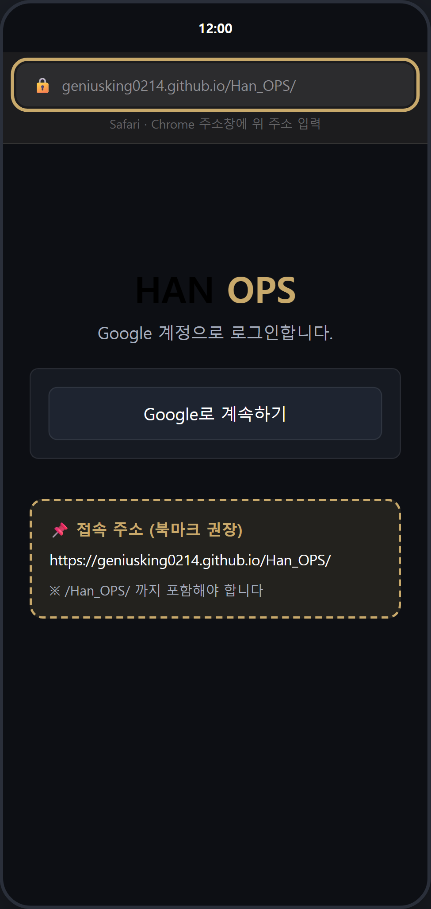
Safari 또는 Chrome을 열고 주소창에 아래 주소를 입력합니다.
https://geniusking0214.github.io/Han_OPS/
주소 끝에 /Han_OPS/ 가 반드시 포함되어야 합니다. 없으면 404 오류가 납니다.
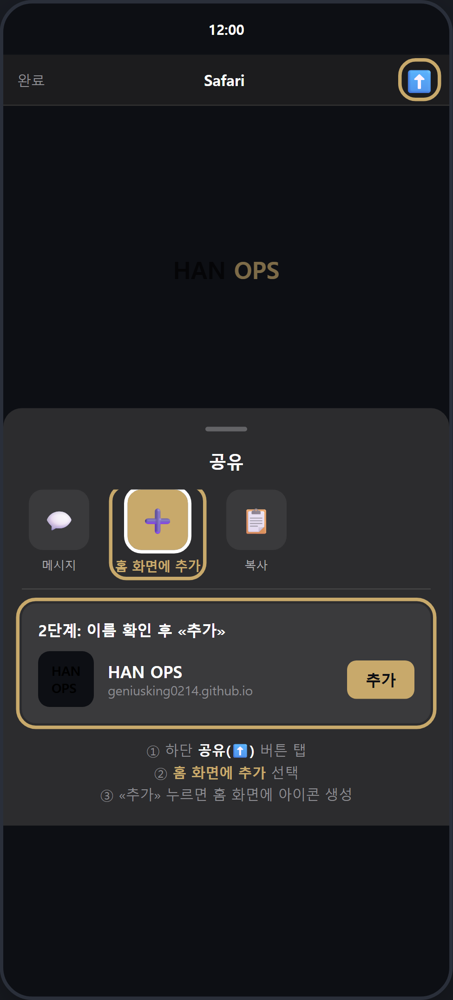
Safari 하단 공유(⬆️) 버튼 → «홈 화면에 추가» → «추가»를 누릅니다.
홈 화면에 HAN OPS 아이콘이 생깁니다. 이후 아이콘으로 실행하세요.
iPhone에서 푸시 알림을 받으려면 반드시 홈 화면 추가 후 앱처럼 실행해야 합니다.
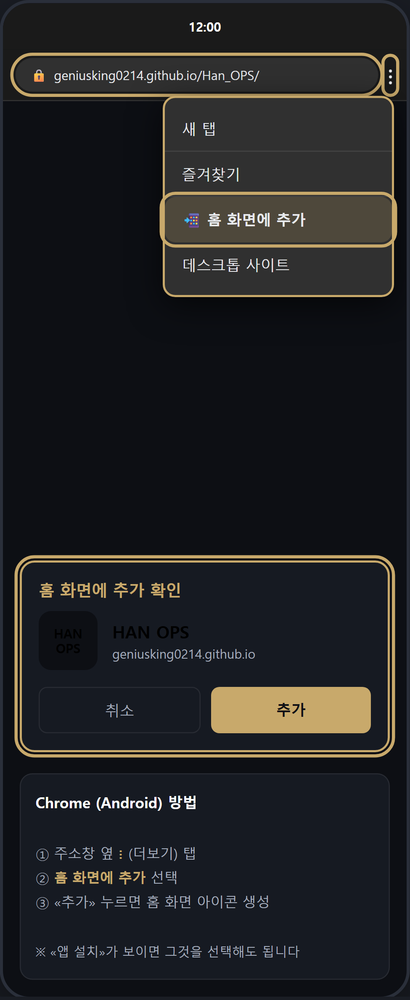
Chrome 주소창 옆 ⋮ (더보기) → «홈 화면에 추가» → «추가»를 누릅니다.
«앱 설치» 메뉴가 보이면 그것을 선택해도 됩니다.
홈 화면 아이콘으로 실행하면 앱처럼 전체 화면으로 열립니다.
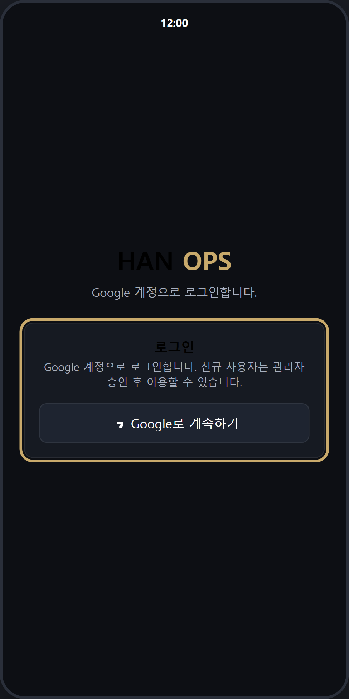
«Google로 계속하기» 버튼을 눌러 로그인합니다.
처음 로그인하면 자동으로 가입됩니다.
별도 회원가입 버튼은 없습니다. Google 계정 하나로 로그인·가입이 동시에 됩니다.
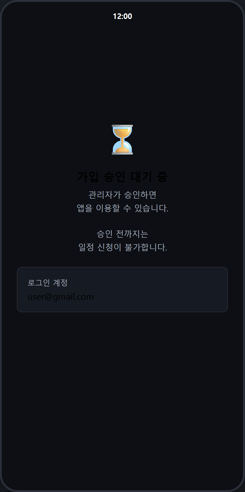
관리자가 팀을 배정하고 승인할 때까지 기다립니다.
이 화면이 보이면 아직 일정 신청이 불가합니다.
승인되면 다시 접속했을 때 홈(대시보드) 화면으로 들어갑니다.
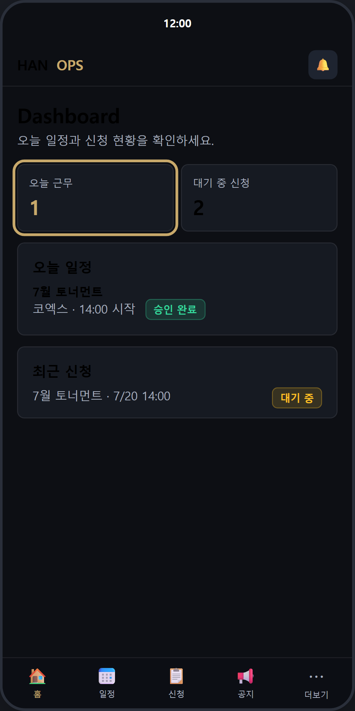
하단 «홈» 탭에서 오늘 일정과 신청 현황을 확인합니다.
오늘 근무, 대기 중 신청 수가 큰 숫자 카드로 표시됩니다.
매일 가장 먼저 확인하는 화면입니다.
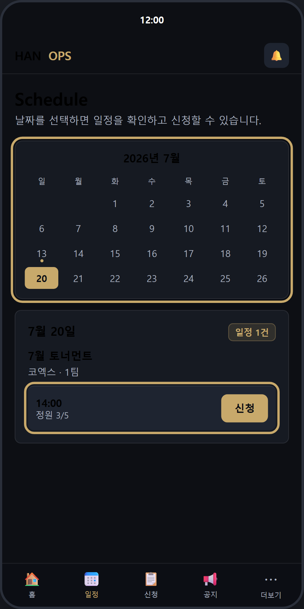
하단 «일정» 탭 → 달력에서 날짜 선택 → 원하는 시간의 «신청» 버튼을 누릅니다.
● 표시가 있는 날짜에 일정이 있습니다.
정원이 남은 슬롯만 신청할 수 있습니다. (예: 정원 3/5 → 2자리 남음)
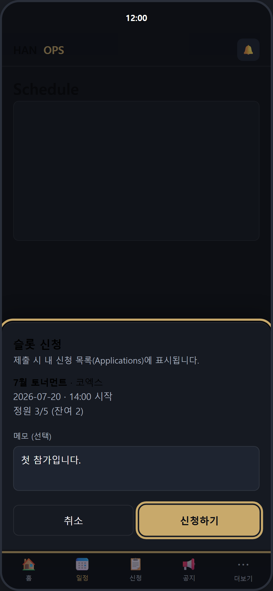
메모(선택)를 입력하고 «신청하기»를 누릅니다.
일정·장소·시간·정원 정보를 다시 한번 확인하세요.
모바일에서는 화면 아래에서 시트가 올라옵니다.
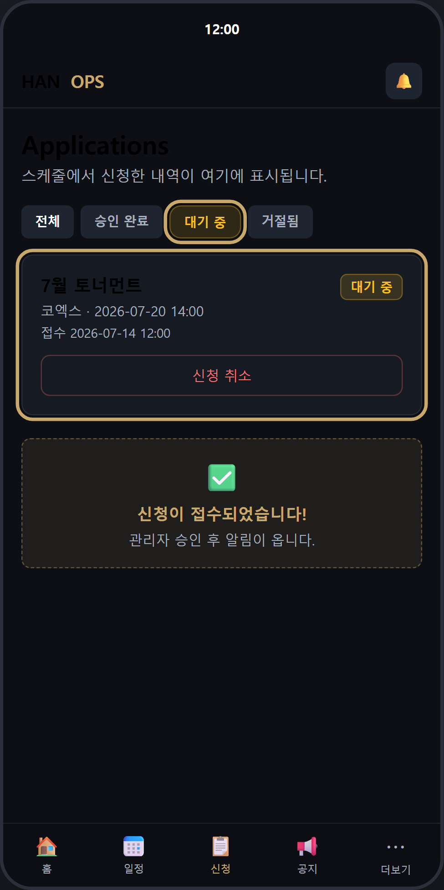
하단 «신청» 탭(Applications)에서 «대기 중» 상태를 확인합니다.
신청이 접수되면 관리자 승인을 기다립니다.
대기 중에는 «신청 취소»가 가능합니다.
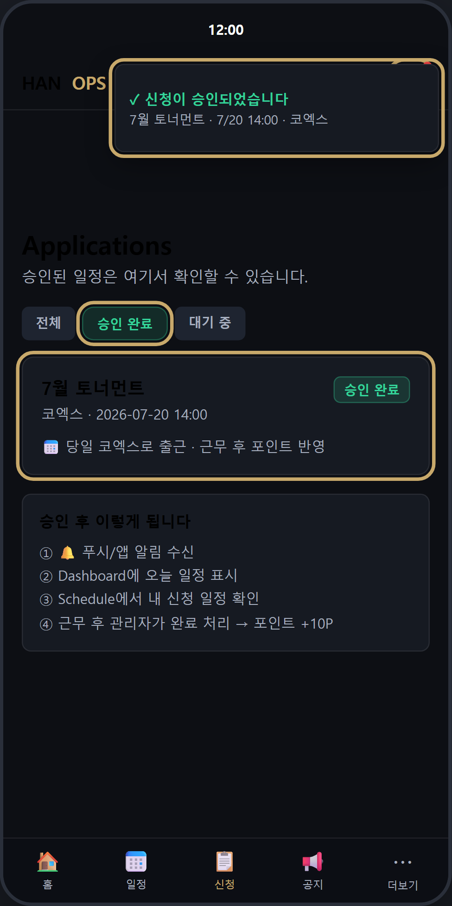
🔔 알림을 확인하고, 신청 탭에서 «승인 완료» 상태를 확인합니다.
승인되면 당일 근무 일정으로 확정됩니다.
Settings에서 푸시 알림을 켜 두면 승인·거절 시 바로 알림을 받습니다.
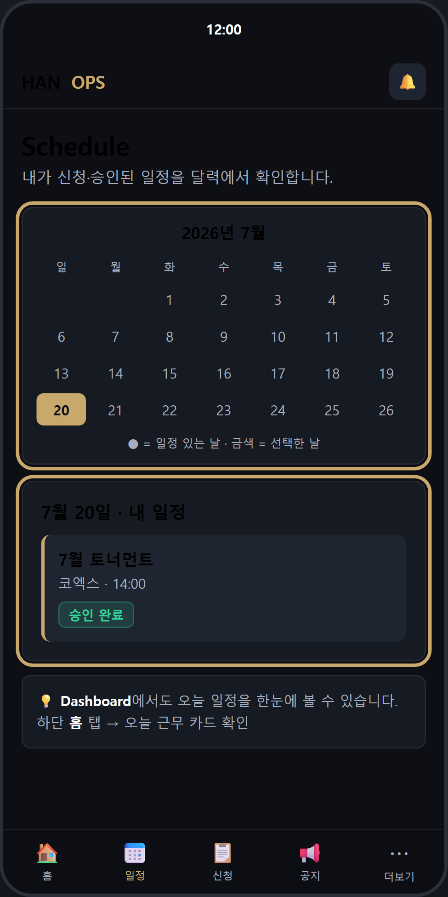
«일정» 탭 달력 또는 «홈» 탭에서 내 승인 일정을 확인합니다.
근무 당일 해당 장소·시간에 출석합니다.
근무 후 관리자가 완료 처리하면 포인트 +10P가 반영됩니다.